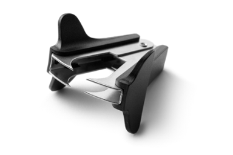

Given the choice between functionally equivalent designs, the simplest design should be selected. Two different but related design considerations are often employed to improve the design of mass-produced products.
Design for Manufacturability involves the application of an engineer’s knowledge and consideration of manufacturing processes in their design, and focuses on optimizing the manufacture of a product.
Design for Assembly is a tool used to optimize components and part designs for assembly of the finished good.
These design considerations are now commonly referred to as a single tool, Design for Manufacturability and Assembly (DFMA).
Several guidelines help engineers optimize the manufacturing and assembly processes through design and process improvements. Following these guidelines can improve communication with the production team and reduce the cost to produce. Designing for manufacture and assembly also addresses an important consideration for the product manufacturer—the simplest design will typically be the least expensive to produce.
Apply DFMA Guidelines
To apply these guidelines, let’s work with a common office product—the staple remover. You will work with a team to investigate why and how the staple remover design has evolved and improved the product.

Figure 1. Jaw-style Staple Remover
Figure 2. Slide-style Staple Remover
Look at the two styles of staple removers.
What visual similarities do you notice between the two products?
What visual differences do you notice?
Use both staple removers to remove a few embedded staples making careful observations about the performance of each.
What operational similarities do you notice between the two products?
What operational differences do you notice?
Conduct a functional analysis of the jaw-style staple remover. Do not disassemble the staple remover. Reference the Functional Analysis Example if needed.
Identify the product’s name and the company name.
Identify the purpose or primary function.
Sketch an isometric pictorial of the product and label the individual components. If you are not sure what a particular component is called, then make a logical guess.
Make an educated guess as to how this product operates.
What simple machine(s) are used as part of these devices to remove staples?
What mechanism do you think is used in the jaw-type staple remover to return the hinged metal components to their original position after you release the pressure?
Using a black box systems model, identify the system inputs, intended product function, and outputs.
Document what mechanical components and mechanisms are visible.
Predict what you might find when the staple removers are taken apart. What might the hidden components do?
Watch the jaw-style staple remover product disassembly to identify all the parts. Do not disassemble the staple remover yourself.
Fill in the quantity (qty) of each part. For example, if there are three instances of the same part, the quantity is 3.
Add one column to the chart titled Number of Interfaces (Ni).
List the number of interfaces (Ni) for each part. The number of interfaces is the number of other parts that the part connects to or interacts with.
Calculate the Complexity Factor
Cummins, Inc. developed a metric for determining how complex a product design is, known as the complexity factor. The two values affecting this metric are the total number of parts (Np), and the total number of part-to-part interfaces (Ni).
Using your Product Disassembly chart for the jaw-style staple remover, find the total number of parts by summing the values in the quantity column
Find the total number of part-to-part interfaces in the jaw-style staple remover by summing the values in the (Ni) column.
Use your totals from steps 5 and 6 to calculate the complexity factor of the jaw-style staple remover.
Minimizing the number of parts and/or the number of interfaces will make the product more efficient—easier to assemble and less complex. Although designers must always be careful to ensure that a simplified version of the product is still fully functional, a simpler design can improve reliability and user experience.
Shift Your Perspective
Imagine now that you are the manufacturer of the product. You have received instructions from the product designer to produce the jaw-style staple remover. However, you have concerns about the complexity of the overall assembly and the impact it may have on production time and cost.
Using the results from your visual, functional, and structural analysis, brainstorm what parts of the jaw-style stapler remover assembly could be adapted or modified to improve the manufacturability of the product.
Chose at least two of your team’s brainstormed ideas and recalculate the complexity factor based on the changes.
Bring the other slide-style design staple remover back to your team’s workspace.
Thinking about DFMA Guidelines, compare and contrast the designs of the two styles of staple removers. Think about manufacturing, assembly, performance, and cost.
Illustrate DFMA Guidelines
As a class, you will create an infographic for your classroom to depict the Design for Manufacturing and Assembly Guidelines. Each team will be assigned one guideline to develop an icon for.
Get creative and design an icon for your assigned guideline. Remember, the simpler the better, as long as it achieves its purpose.
Individually, create a concept sketch of the icon.
As a team, use a decision matrix to select one concept.
Individually, create a final draft of the concept selected.
Hold a team vote on which draft to submit as the final design.
Work with your teacher and classmates to combine all icons into one document that can be displayed in your classroom. Use the infographic to refresh your thinking as you work through course design problems.